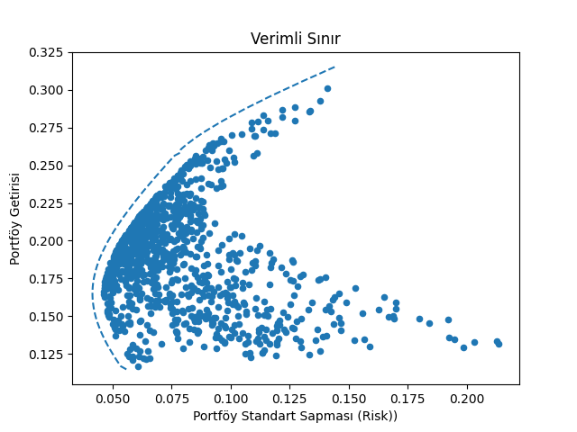

Çeşitlendirmenin (diversification), yani portföye farklı enstrümanlar koymanın, farklı sektörlerden olsun, farklı ülkelerden olsun, iyi bir şey olduğu hep tavsiye edilir, kulağa küpe kuralı “yumurtaları aynı sepete koymamak’’, teknik anlamda bu söz portföydeki bir enstrümanın tamamen çöktüğü durumda (sepetin düşüp yumurtaların kırılması) kayıpların sınırlanacağı çağrıştırmasını yapar. Mesela [4, sf. 115]’e göre, ABD borsalarında hisselerin artık getirisinin ortalama %3 olduğu bilinir. Eğer yıllık %20 standart sapmayı baz alırsak, Sharpe oranı (SR) %3 bölü %20 = 0.15. Eğer aynı ülkede ama farklı sektörlerde çeşitlendirirsek aşağı yukarı SR = 0.2 elde edebiliriz. Eğer farklı ülkelere çeşitlersek SR 0.25’e çıkabiliriz. Eğer yatırım sınıfını da çeşitlersek, yani tahviller, senetler, baz ürünlere yatırım yapmak üzere, o zaman SR 0.4 elde edebiliriz.
İçinde birbiri ile ilintisi olmayan (uncorrelated) varlıklar olan bir portföyün -ki çeşitlenmiş olmanın teknik tercümesi bu aslında- toplam standart sapması daha düşüktür. Sharpe oranını hesaplarken standart sapmaya böldüğümüz için daha ufak değer daha büyük SR anlamına gelir. Matematiksel olarak sadece bir portföy düşünelim içinde iki varlık olsun, gelecekteki getirilerini \(R_1,R_2\)’yi bildiğimizi farzedelim (tarihi veriden kestiriyoruz mesela), bu varlıklar \(w_1,w_2\) ağırlıkları üzerinden birleştiriliyor olsun, toplam portföy getirisi,
\[ R_p = w_1 R_1 + w_2 R_2 \]
\(R_1,R_2\) rasgele değişkenler. Tüm portföyün beklentisi,
\[ E(R_p) = E(w_1 R_1 + w_2 R_2) \]
\[ = w_1 E(R_1) + w_2 E(R_2) \]
Portföyün varyansı için [5, sf. 73],
\[Var(w_1 R_1 + w_2 R_2) = w_1^2Var(R_1) + w_2^2 Var(R_2) + w_1w_2Cov(R_1,R_2) \qquad (1)\]
Diyelim ki \(w_1,w_2\) eşit; O zaman formülden açık bir şekilde görülüyor ki üstteki varyansın azalacağı durumlardan biri iki enstrümanın hiç ilintili olmadığı durumdur, çünkü bu durumda iki getirinin kovaryansı sıfır olur; \(Cov(R_1,R_2)=0\), üstteki formüldeki 3. terim tamamen yokolur, böylece portföy varyansı azalır. Varyans azalınca Sharpe oranı artar.
N Tane Enstrüman
Çok boyutlu hesap için portföy ağırlıkları \(w = [w_1,..,w_n]^T\), getiriler \(R = [R_1,..,R_n]^T\) vektörleri içinde olsun,
\[ R_p = w^T R \]
Beklenti
\[ E(R_p) = E(w^T R) = w^TE(R) \]
Varyans
\[ Var(R_p) = E\big( (R_p-E(R_p))(R-E(R_p))^T \big) \]
\[ = E\big( (R_p-w^TE(R))(R_p-w^TE(R))^T \big) \]
\[ = E\big( (w^TR-w^TE(R))(w^TR-w^TE(R))^T \big) \]
\[ = w^T E\big( (R-E(R))(R-E(R))^Tw \big) \]
\[ = w^T cov (R) w \]
Yine iki enstrüman üzerinden matris formunu kontrol edelim, varyanslar için \(\sigma_1^2,\sigma_2^2\) kullanırsak,
\[ Var(R_p) = \left[\begin{array}{cc} w_1 & w_2 \end{array}\right] \left[\begin{array}{rr} \sigma_1^2 & \sigma_{12} \\ \sigma_{2,1}^2 & \sigma_2^2 \end{array}\right] \left[\begin{array}{r} w_1 \\ w_2 \end{array}\right] \qquad (2) \]
\[ = \left[\begin{array}{cc} w_1 \sigma_1^2 + w_2 \sigma_{2,1} & w_1 \sigma_{1,2} + w_2\sigma_2^2 \end{array}\right] \left[\begin{array}{r} w_1 \\ w_2 \end{array}\right] \]
\[ = w_1^2\sigma_1^2 + w_1w_2\sigma_{2,1} + w_1w_2\sigma_{1,2} + w_2^2\sigma_2^2\]
\[ = w_1^2\sigma_1^2 + 2 w_1w_2\sigma_{1,2} + w_2^2\sigma_2^2\]
Portföy Ağırlıklarını Hesaplamak
Portföy varyansını, riskini azaltmak enstrümanlar arası korelasyonu azaltmak ile mümkün, bunu bir yana koyalım. Bir ek yöntem enstrümanlara ayrılmış sermayeyi, yani bölüştürme ağırlıklarını optimal bir seviyeye getirmektir. Matematiksel olarak
\[ \textrm{minimize et } w^T \Sigma w \]
\[ R_p^T w = \mu, \quad w^T 1 = 1 \textrm{ şartlarına uyarak }\]
ki \(\mu\) hedeflenen getiri.
Verimli Sınır (Efficient Frontier)
Markovitz’in buluşlarından biri (getirisinin standart sapması) farklı ağırlıklar üzerinden hesaplanan portföyün riskini ve getirisini grafiklediğinde mümkün tüm getirilerin bir sınır oluşturduğunu görmesiydi, buna verimli sınır ismi verildi. Görsel olarak düşünürsek herhangi verili bir risk için dikey yukarı çıkıp bu sınıra geliyoruz, ve bu sınırdaki risk (ve onu ortaya çıkartan ağırlıklar) elde edebileceğimiz en iyi sonuç. Altta üç şirket üzerinde bu hesabı görebiliriz.
import pandas as pd
df = pd.read_csv("companies.csv",index_col=0,parse_dates=True)
print df.head() MSFT AAPL KO
Date
2010-01-04 26.045432 28.141855 23.509276
2010-01-05 26.053846 28.190509 23.224888
2010-01-06 25.893956 27.742101 23.216647
2010-01-07 25.624666 27.690818 23.158944
2010-01-08 25.801387 27.874915 22.730305Şirketler Microsoft, Apple, ve Coca-Cola.
import scipy as sp
import scipy.optimize as scopt
import scipy.stats as spstats
def calc_annual_returns(daily_returns):
grouped = np.exp(daily_returns.groupby(lambda date: date.year).sum())-1
return grouped
def calc_portfolio_var(returns, weights):
sigma = np.cov(returns.T,ddof=0)
var = (weights * sigma * weights.T).sum()
return var
def sharpe_ratio(returns, weights, risk_free_rate = 0.015):
n = returns.columns.size
var = calc_portfolio_var(returns, weights)
means = returns.mean()
return (means.dot(weights) - risk_free_rate)/np.sqrt(var)
def negative_sharpe_ratio_n_minus_1_stock(weights,returns,risk_free_rate):
weights2 = sp.append(weights, 1-np.sum(weights))
return -sharpe_ratio(returns, weights2, risk_free_rate)
def optimize_portfolio(returns, risk_free_rate):
w0 = np.ones(returns.columns.size-1,dtype=float) * 1.0 / returns.columns.size
w1 = scopt.fmin(negative_sharpe_ratio_n_minus_1_stock,
w0, args=(returns, risk_free_rate))
final_w = sp.append(w1, 1 - np.sum(w1))
final_sharpe = sharpe_ratio(returns, final_w, risk_free_rate)
return (final_w, final_sharpe)
def objfun(W, R, target_ret):
stock_mean = np.mean(R,axis=0)
port_mean = np.dot(W,stock_mean)
cov=np.cov(R.T)
port_var = np.dot(np.dot(W,cov),W.T)
penalty = 2000*abs(port_mean-target_ret)
return np.sqrt(port_var) + penalty
def calc_daily_returns(df):
return np.log(df/df.shift(1))
def calc_efficient_frontier(returns):
result_means = []
result_stds = []
result_weights = []
means = returns.mean()
min_mean, max_mean = means.min(), means.max()
nstocks = returns.columns.size
for r in np.linspace(min_mean, max_mean, 100):
weights = np.ones(nstocks)/nstocks
bounds = [(0,1) for i in np.arange(nstocks)]
constraints = ({'type': 'eq','fun': lambda W: np.sum(W) - 1})
results = scopt.minimize(objfun, weights, (returns, r),
method='SLSQP',constraints = constraints,
bounds = bounds)
if not results.success: raise Exception(result.message)
result_means.append(np.round(r,4)) # 4 decimal places
std_=np.round(np.std(np.sum(returns*results.x,axis=1)),6)
result_stds.append(std_)
result_weights.append(np.round(results.x, 5))
return {'Means': result_means, 'Stds': result_stds, 'Weights': result_weights}
def calc_port_perf(w, ret, covs):
port_ret = np.sum( ret*w )
port_std = np.sqrt(np.dot(w.T, np.dot(covs, w)))
return port_ret, port_std
def plot_all_possible_portfolios(ann_rets):
res = []
for i in range(1000):
w = np.random.random(len(df.columns))
w /= np.sum(w)
r,s = calc_port_perf(w, ann_rets.mean(),ann_rets.cov())
res.append([r,s])
vw = pd.DataFrame(res,columns=['return','sigma'])
return vw
def plot_efficient_frontier(ef_data):
plt.title(u'Verimli Sınır')
plt.xlabel(u'Portföy Standart Sapması (Risk))')
plt.ylabel(u'Portföy Getirisi')
plt.plot(ef_data['Stds'], ef_data['Means'], '--');Günlük getiriler,
daily_returns = calc_daily_returns(df)
print daily_returns.head() MSFT AAPL KO
Date
2010-01-04 NaN NaN NaN
2010-01-05 0.000323 0.001727 -0.012171
2010-01-06 -0.006156 -0.016034 -0.000355
2010-01-07 -0.010454 -0.001850 -0.002489
2010-01-08 0.006873 0.006626 -0.018682Yıllık getiri,
annual_returns = calc_annual_returns(daily_returns)
print annual_returns.head() MSFT AAPL KO
2010 -0.079441 0.507219 0.189366
2011 -0.045157 0.255580 0.094586
2012 0.057989 0.325669 0.065276
2013 0.442980 0.080695 0.172330
2014 0.275646 0.406225 0.052661Eşit ağırlıklar üzerinden oluşturulmuş portföyün varyansı,
eq_weights = np.array([1/3.,1/3.,1/3.])
print calc_portfolio_var(annual_returns,weights=eq_weights)0.00287954016535Sharpe Oranı
print sharpe_ratio(annual_returns,eq_weights)3.20109292169Farklı (rasgele) portföy ağırlıklarının oluşturacağı risk / getiri grafiği,
vw = plot_all_possible_portfolios(annual_returns)
vw.plot(x='sigma',y='return',kind='scatter')
plt.savefig('tser_port_04.png')
Şimdi optimizasyon ile global bir optimal nokta bulalım,
print optimize_portfolio(annual_returns, 0.0003)Optimization terminated successfully.
Current function value: -7.829867
Iterations: 38
Function evaluations: 74
(array([ 0.02615542, 0.76347385, 0.21037072]), 7.8298669383774486)Verimli sınır,
frontier_data = calc_efficient_frontier(annual_returns)print frontier_data['Stds'][:5]
print frontier_data['Means'][:5]
for x in frontier_data['Weights'][:5]: print x[0.055842999999999997, 0.053446, 0.052564, 0.051706000000000002, 0.050871]
[0.1148, 0.1169, 0.11890000000000001, 0.12089999999999999, 0.1229]
[ 0. 0. 1.]
[ 0.06407 0.00512 0.93081]
[ 0.06733 0.01497 0.9177 ]
[ 0.07228 0.02469 0.90303]
[ 0.07493 0.03458 0.89049]vw = plot_all_possible_portfolios(annual_returns)
vw.plot(x='sigma',y='return',kind='scatter')
plt.hold(True)
plot_efficient_frontier(frontier_data)
plt.savefig('tser_port_03.png')
Bootstrap
Dikkat: üstteki optimizasyonu olduğu gibi kullanmak sayısal olarak pek ise yaramayabilir. Mesela, üç yatırım var, S&P 500, NASDAQ ve 20 yıllık ABD tahvili. Bu varlıkları basit bir şekilde kullanacağız, onları sadece alıp elde tutacağız. Eğer tek periyot (eldeki tüm veriyi) Markowitz optimizasyonu üzerinden ağırlıkları hesaplarsak, ağırlıklar çok ekstrem, stabil olmuyor. Çözüm için bootstrap tekniği kullanılır; veriden ardı ardına örneklem alırız, yani veriden yeni veri yaratırız, beklediğimiz o ki örneklemlerin dağılımı “gerçek’’ verinin dağılımı ile benzer olacak. Bu işlemin yan etkisi veriyi fazlalaştırmak, ardından yapılan hesabın ortalamasını alınca stabiliteye daha yaklaşmış olmak.
Zaman serisinden örneklem almanın değişik yolları var, bir tanesi blok örneklem yöntemi, kesintisiz zaman seri parçaları almak. Bir diğeri noktalar ardı ardına olsun olmasın verinin rasgele noktalarından örneklem toplamak. Alttaki ikinci yöntemi takip ediyor,
import zipfile, pandas as pd, util
import numpy as np, random, datetime
from scipy.optimize import minimize
def create_dull_pd_matrix(dullvalue=0.0, dullname="A",
startdate=pd.datetime(1970,1,1).date(),
enddate=datetime.datetime.now().date(), index=None):
if index is None:
index=pd.date_range(startdate, enddate)
dullvalue=np.array([dullvalue]*len(index))
ans=pd.DataFrame(dullvalue, index, columns=[dullname])
return ans
def addem(weights):
return 1.0 - sum(weights)
def variance(weights, sigma):
return (np.matrix(weights)*sigma*np.matrix(weights).transpose())[0,0]
def neg_SR(weights, sigma, mus):
estreturn=(np.matrix(weights)*mus)[0,0]
std_dev=(variance(weights,sigma)**.5)
return -estreturn/std_dev
def equalise_vols(returns, default_vol):
factors=(default_vol/16.0)/returns.std(axis=0)
facmat=create_dull_pd_matrix(dullvalue=factors,
dullname=returns.columns,
index=returns.index)
norm_returns=returns*facmat
norm_returns.columns=returns.columns
return norm_returns
def markosolver(returns, default_vol, default_SR):
use_returns=equalise_vols(returns, default_vol)
sigma=use_returns.cov().values
mus = use_returns[asset_name].mean() for asset_name in use_returns.columns
mus=np.array([mus], ndmin=2)
mus=mus.transpose()
number_assets=use_returns.shape[1]
start_weights=[1.0/number_assets]*number_assets
bounds=[(0.0,1.0)]*number_assets
cdict=[{'type':'eq', 'fun':addem}]
ans=minimize(neg_SR, start_weights,
(sigma, mus),
method='SLSQP',
bounds=bounds,
constraints=cdict,
tol=0.00001)
return ans['x']
def generate_fitting_dates(data, rollyears):
start_date=data.index[0]
end_date=data.index[-1]
yearstarts=list(pd.date_range(start_date, end_date, freq="12M"))+[end_date]
periods=[]
for tidx in range(len(yearstarts))[1:-1]:
period_start=yearstarts[tidx]
period_end=yearstarts[tidx+1]
fit_start=start_date
fit_end=period_start
periods.append([fit_start, fit_end, period_start, period_end])
return periods
def bootstrap_portfolio(returns_to_bs,monte_carlo,
monte_length,default_vol,default_SR):
weightlist=[]
for unused_index in range(monte_carlo):
bs_idx=[int(random.uniform(0,1)*len(returns_to_bs)) \
for i in range(monte_length)]
returns=returns_to_bs.iloc[bs_idx,:]
weight=markosolver(returns, default_vol=default_vol, default_SR=default_SR)
weightlist.append(weight)
theweights_mean=list(np.mean(weightlist, axis=0))
return theweights_mean
def optimise_over_periods(data,rollyears, monte_carlo,monte_length):
fit_periods=generate_fitting_dates(data, rollyears=rollyears)
weight_list=[]
for fit_tuple in fit_periods:
period_subset_data=data[fit_tuple[0]:fit_tuple[1]]
weights=bootstrap_portfolio(period_subset_data,
monte_carlo=monte_carlo,
monte_length=monte_length,
default_vol=0.2, default_SR=1.0 )
dindex=[fit_tuple[2]+datetime.timedelta(seconds=1),
fit_tuple[3]-datetime.timedelta(seconds=1)]
weight_row=pd.DataFrame([weights]*2,
index=dindex,
columns=data.columns)
weight_list.append(weight_row)
weight_df=pd.concat(weight_list, axis=0)
return weight_dfimport zipfile, pandas as pd, random
symbols = ['SP500','NASDAQ','US20']
df = pd.DataFrame()
with zipfile.ZipFile('../tser_voltar/legacycsv.zip', 'r') as z:
for symbol in symbols:
f = '%s_price.csv' % symbol
df[symbol] = pd.read_csv(z.open(f),sep=',',
index_col=0,
parse_dates=True)['PRICE']
df['SP500'] = df.SP500.pct_change()
df['NASDAQ'] = df.NASDAQ.pct_change()
df['US20'] = df.US20.pct_change()
df = df[(df.index >= '1999-08-02') & (df.index <= '2015-04-22')]
random.seed(0)
w=boot.optimise_over_periods(df)w.plot()
plt.savefig('tser_port_01.png')
Bu sonuç [1. sf. 172]’dakine yakın, ağırlıklar çok daha stabil.
Kodda oynaklığın standardize edildiğine dikkat; tüm zaman serilerinin oynaklığı eşitleniyor, ve maksimize edilmeye uğraşılan getiri.